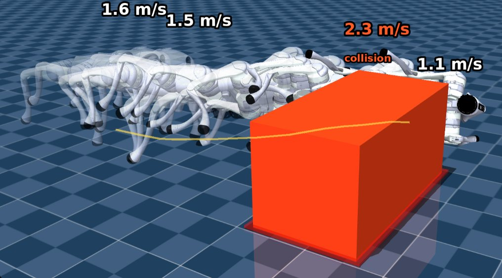
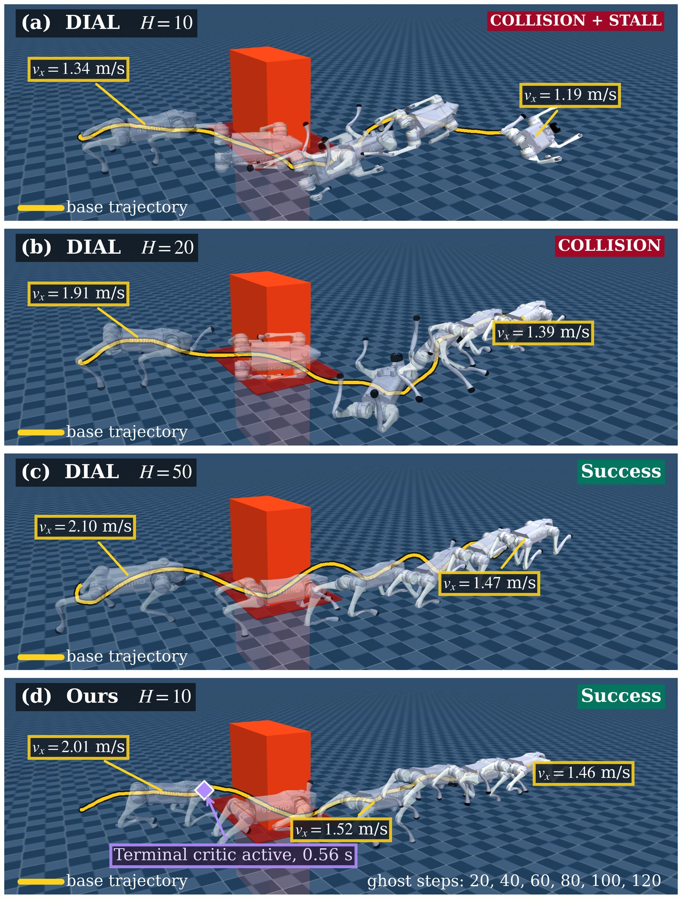
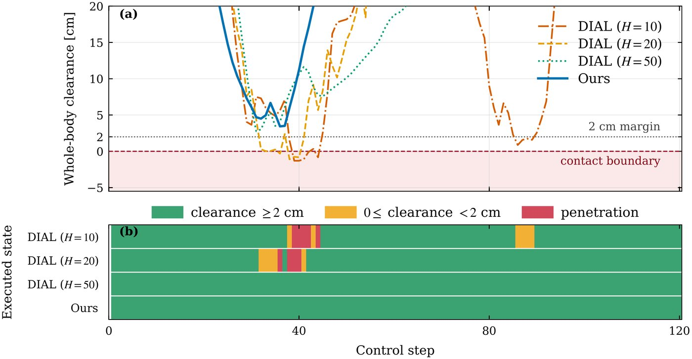
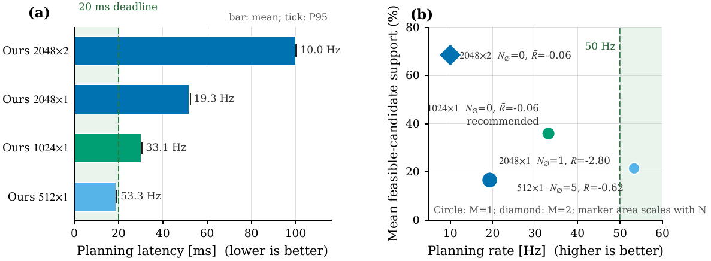

Safety-critical high-speed legged locomotion requires motion planners to balance safety foresight with online computational efficiency. Although short prediction horizons reduce rollout costs, they provide limited safety foresight and strict safety constraints severely restrict the feasible trajectory space. We propose a recovery-guided model-based diffusion (MBD) framework for safety-critical legged locomotion. It incorporates a learned terminal recovery critic into short-horizon trajectory optimization. Specifically, the critic approximates the worst-case future clearance margin along rollouts of a designated recovery policy. We introduce a feasibility-guided refinement strategy that combines within-horizon constraints and terminal recoverability at each sampling stage, while retaining feasible elites to mitigate sampling-support loss. Across 50 paired randomized Unitree Go2 obstacle-avoidance trials, our approach achieves zero collisions and 98% strict-clearance success, while requiring substantially less computation than long-horizon MBD baselines.
A neural terminal recovery critic approximates the worst future clearance margin under a fixed long-horizon recovery policy. Online short-horizon MBD then filters and reweights candidates using within-horizon safety, physical feasibility, and terminal recoverability.

Finite-horizon limitation with H=10: a trajectory can remain safe inside the horizon yet terminate in a state that is not safely recoverable.
Unitree Go2 high-speed obstacle avoidance in GPU-parallel MuJoCo MJX. All methods share task objectives, actuator limits, sampling budgets, initial states, and seeds on 50 paired randomized scenarios.
Combined demo: single-obstacle comparison against longer-horizon DIAL baselines, then sequential two-obstacle side view, followed by the two-obstacle quantitative summary.
| Method | H | rcol (%) ↓ | dmin (cm) ↑ | rsafe (%) ↑ | ρfeas (%) | tcom (ms) ↓ | tp95 (ms) ↓ |
|---|---|---|---|---|---|---|---|
| DIAL | 10 | 98.0 | −2.77±2.50 | 0.0 | — | 31.0±0.1 | 31.2 |
| DIAL | 20 | 68.0 | −0.13±4.07 | 20.0 | — | 113.9±0.5 | 114.7 |
| DIAL | 50 | 58.0 | −0.37±3.52 | 22.0 | — | 273.3±1.5 | 276.1 |
| Shield-DIAL | 10 | 96.0 | −1.78±1.74 | 0.0 | — | 31.3±0.1 | 31.4 |
| Shield-DIAL | 20 | 68.0 | −0.60±3.23 | 20.0 | — | 114.2±0.3 | 114.4 |
| Shield-DIAL | 50 | 60.0 | −0.57±3.23 | 20.0 | — | 273.4±0.8 | 274.7 |
| Ours | 10 | 0.0 | 3.57±2.75 | 98.0 | 54.6 | 100.1±0.1 | 100.3 |
| Dual-shield | 10 | 2.0 | 4.55±3.58 | 94.0 | 56.9 | 100.1±0.1 | 100.3 |
| Soft-guided | 10 | 20.0 | 2.14±4.44 | 80.0 | 49.2 | 100.0±0.1 | 100.3 |
Ours (H=10) reaches zero collisions and 98% strict 2 cm safety while remaining faster than DIAL at H=20/50. Hard feasibility gating matters: Soft-guided rises to 20% collisions.

Obstacle-avoidance snapshots: DIAL with H=10/20/50 versus recovery-guided MBD with H=10. Yellow curves show executed base trajectories; translucent poses are closed-loop states at 20-step intervals.

Safety comparison. (a) Minimum whole-body clearance with 2 cm margin and contact boundary. (b) Executed safety state over the episode.
A sampling-budget ablation isolates the latency / support trade-off for online short-horizon planning.

Computational-budget ablation. Reducing refinements or sample count raises planning frequency; Ns=512, M=1 meets a 20 ms average budget with reduced task performance.